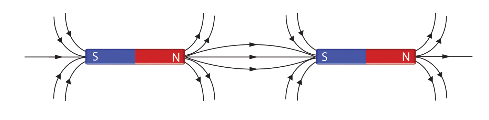
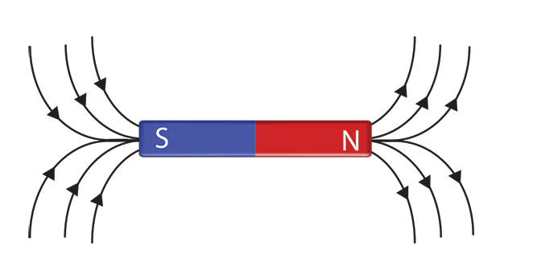
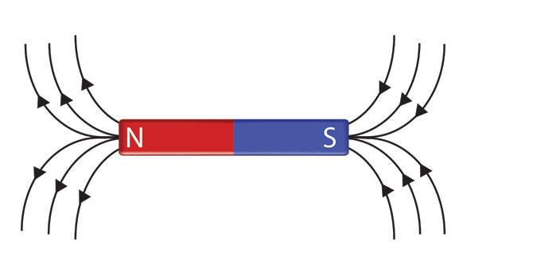
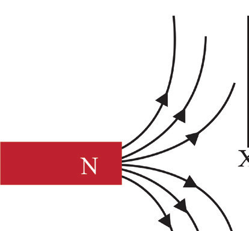
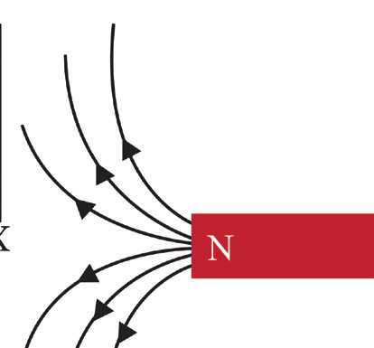

and enter the south pole, and back to the north pole, forming a closed loop.
3. Magnetic lines of force are close together where the magnetic force is stronger, and they are far apart where the magnetic force is weaker.
4. Magnetic lines of force never cross one another.
5. Parallel magnetic lines of force in the same direction repel one another. Parallel magnetic lines of force in opposite directions attract one another as shown in Figure 3.34.

Unlike poles attract


Like poles repel
6. Magnetic lines of force pass through magnetic and non-magnetic materials.
7. Magnetic lines of force always enter or leave a magnetic material at right angles to the surface.
Neutral points in a magnetic field
At any point where two different magnetic fields exist, a stronger field is created if they are in the same direction, but a weaker field arises if they are in opposite directions. The two fields can balance each other at one point.
For instance, if two bar magnets are positioned close to each other as illustrated in Figure 3.35, their magnetic fields oppose one another. At a certain spot, these fields exactly cancel out, creating a neutral point labelled X. As a result, there is no magnetic force present at neutral points.
Neutral point

X
